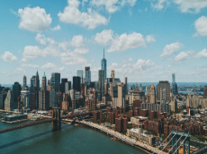
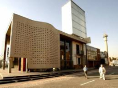

New York City
- One of the gretest cities in the world.
- There's magnificent architectural treasures.
- One of the cities attractions like The Empire State Building.
A Foreign Language: Chinese
I would like to learn Chinese Language
because it's so unique as it has
no cases, genders, tenses and plurals.
| English Phrase |
Foreign Language |
| Hi, how are you? |
你好你好嗎？ |
| I can't hear you |
我聽不到你的聲音 |
| Where do you come from? |
你從哪裡來的? |
Historical places in the city of Johannesburg
The Apartheid Museum
.jpg)
- It illustrates the rise and fall of apartheid.
- An architectural consortium and comprising several architectural firms.
- The museum ia s super communuty a unique S.A experience.
The Constitutional Hill

- It tells the story of South Africa’s journey to democracy.
- The site is a former prison and military fort
- They were men and women of all races, creeds, ages and political agendas.
The Mandela House Museum
.jpg)
- It was where Nelson Mandela lived between 1946 and 1962.
- Mandela donated the house to the Soweto Heritage Trust to be a museum.
- The house is a single-story red-brick matchbox built in 1945.
The Apartheid Museum
- It illustrates the rise and fall of apartheid.
- An architectural consortium and comprising several architectural firms.
- The museum ia s super communuty a unique S.A experience.
The Constitutional Hill
- It tells the story of South Africa’s journey to democracy.
- The site is a former prison and military fort
- They were men and women of all races, creeds, ages and political agendas.
The Mandela House Museum
- It was where Nelson Mandela lived between 1946 and 1962.
- Mandela donated the house to the Soweto Heritage Trust to be a museum.
- The house is a single-story red-brick matchbox built in 1945.